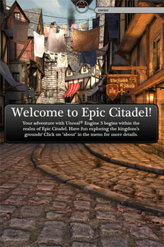
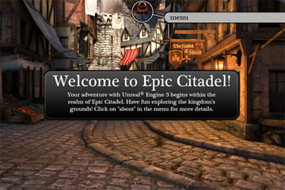
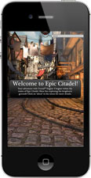
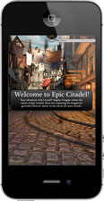
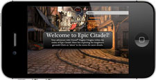
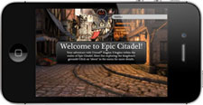

UDN
Search public documentation:
MobileScreenOrientation
日本語訳
中国翻译
한국어
Interested in the Unreal Engine?
Visit the Unreal Technology site.
Looking for jobs and company info?
Check out the Epic games site.
Questions about support via UDN?
Contact the UDN Staff
中国翻译
한국어
Interested in the Unreal Engine?
Visit the Unreal Technology site.
Looking for jobs and company info?
Check out the Epic games site.
Questions about support via UDN?
Contact the UDN Staff
UE3 Home > Mobile Home > Mobile Screen Orientation
Mobile Screen Orientation
Overview
|  |  |
| Portrait | Landscape |
Setting Orientation
UDKGameOverrides.plist file in the UDKGame/Build/iPhone directory. There are 2 keys related to screen orientation: UIInterfaceOrientation and UISupportedInterfaceOrientations. UIInterfaceOrientation determines which orientation at start up, while UISupportedInterfaceOrientations specifies which orientations are allowed. UE3 only uses the UIInterfaceOrientation setting, but it is good practice to set both appropriately.
The valid values for these plist keys are:
|  |  |  |  |
| UIInterfaceOrientationPortrait | UIInterfaceOrientationPortraitUpsideDown | UIInterfaceOrientationLandscapeRight | UIInterfaceOrientationLandscapeLeft |
UDKGameOverrides.plist file after the existing overrides:
<key>UIInterfaceOrientation</key>
<string>UIInterfaceOrientationPortrait</string>
<key>UISupportedInterfaceOrientations</key>
<array>
<string>UIInterfaceOrientationPortrait</string>
<string>UIInterfaceOrientationPortraitUpsideDown</string>
</array>
<?xml version="1.0" encoding="UTF-8"?>
<!DOCTYPE plist PUBLIC "-//Apple//DTD PLIST 1.0//EN" "http://www.apple.com/DTDs/PropertyList-1.0.dtd">
<plist version="1.0">
<dict>
<key>UIFileSharingEnabled</key>
<true />
<key>CFBundleIdentifier</key>
<string>com.udn.example</string>
<key>CFBundleName</key>
<string>MyUDKGame</string>
<key>CFBundleDisplayName</key>
<string>UDK Game</string>
<key>UIInterfaceOrientation</key>
<string>UIInterfaceOrientationPortrait</string>
<key>UISupportedInterfaceOrientations</key>
<array>
<string>UIInterfaceOrientationPortrait</string>
<string>UIInterfaceOrientationPortraitUpsideDown</string>
</array>
</dict>
</plist>
Auto Rotation
- mobile enablerotation
- Enables the auto-rotation behavior.
- mobile disablerotation
- Disables the auto-rotation behavior.
ConsoleCommand() function inherent to all actors. Executing these commands in the gametype or player controller would allow control of the auto-rotation behavior globally (or at least on a per-game basis).
This example demonstrates how to force auto-rotation off for a gametype:
class MyGameInfo extends SimpleGame;
event InitGame(string Options, out string ErrorMessage)
{
super.InitGame(Options, ErrorMessage);
ConsoleCommand("mobile disablerotation");
}